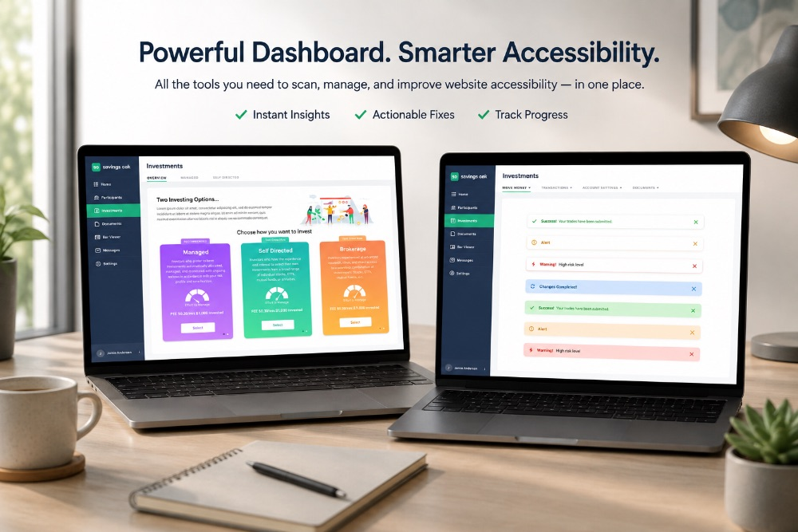
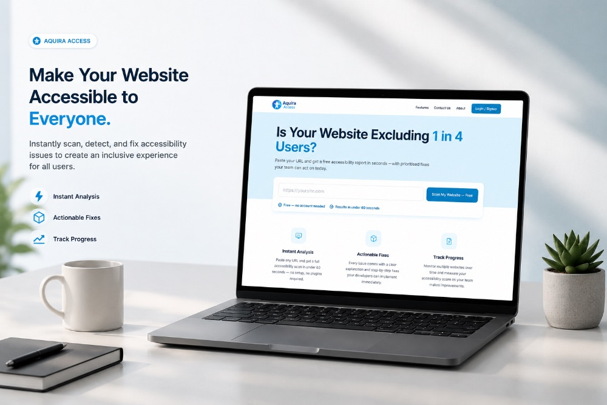
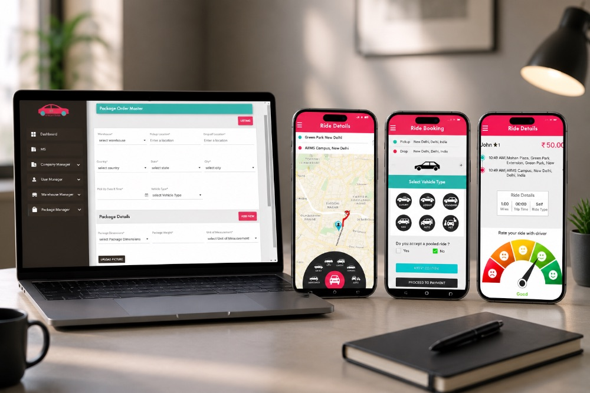
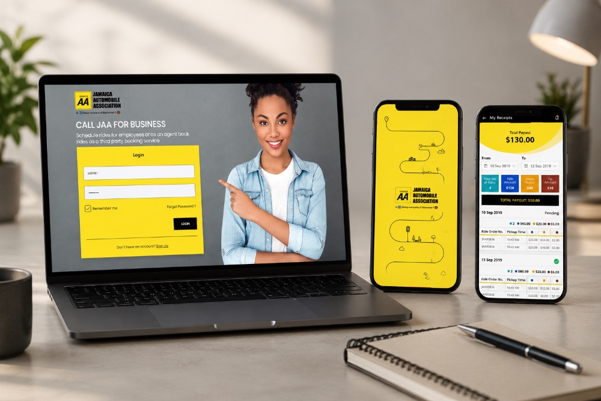
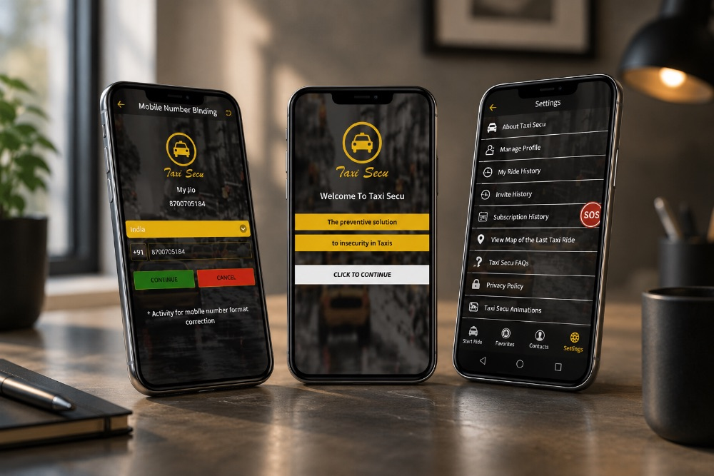
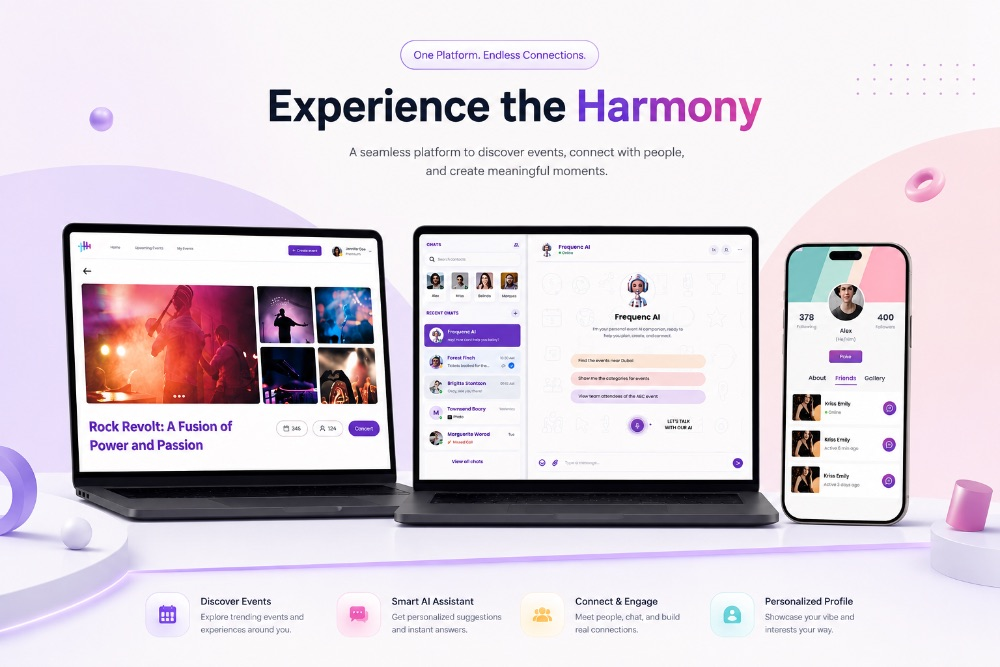
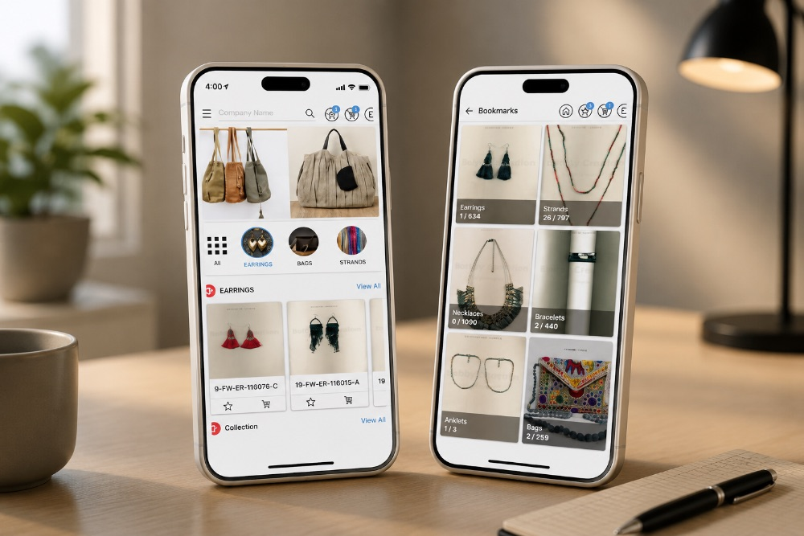

Real Problems, Real Solutions.
Trusted by teams across fintech, healthcare, logistics, and consumer tech. Every engagement ships to production — see what we've built.
 AI & HR Tech
View Case Study
AI & HR Tech
View Case Study
HYRIX AI
An AI-native recruiting platform automating sourcing, screening, and interviewing while keeping recruiters in control at every stage.
Trustin Digital Escrow
A blockchain-powered PaaS escrow platform on Hyperledger Fabric, ensuring secure, transparent, contract-based transactions.

Fintech & Blockchain View Case StudySavings Oak
Revamped enterprise HSA platform with a modern, responsive interface built in Figma and React.
 Healthcare
View Case Study
Healthcare
View Case Study
Poshan Sathi
A digital child nutrition platform helping field teams track growth, flag malnutrition early, and manage nutrition camps.

Accessibility View Case StudyAquira Access
An accessibility platform that scans websites for WCAG issues and delivers clear, actionable fixes teams can implement immediately.
 Mobility & Transport
View Case Study
Mobility & Transport
View Case Study
LED 360
An all-in-one roadside assistance platform bringing towing, repairs, and car washes into one seamless app.

Mobility & Transport View Case StudyZypps
A ride scheduling app using the GRASP algorithm to optimize driver earnings and minimize empty miles.

Mobility & Transport View Case StudyJaa Application
An on-demand cab service with intelligent ride allocation for cost-effective, efficient bookings.

Mobility & Transport View Case StudyTaxiSecu
A passenger safety app for Cameroon and Congo with real-time ride tracking and emergency SOS alerts.
 E-commerce & Marketplace
View Case Study
E-commerce & Marketplace
View Case Study
Rebookit Club
A marketplace connecting book lovers to buy, sell, and discover pre-loved books.

Events / Web3 View Case StudyFrequenC
A Web 3.0 event platform enabling seamless event creation, blockchain ticketing, and networking.

E-commerce & Marketplace View Case StudyBobbycreation
A secure B2B jewelry app with swipe-based browsing and global wholesale catalog access.
 IoT & Smart Infra
View Case Study
IoT & Smart Infra
View Case Study
WLOG
A real-time water level forecasting platform helping government teams monitor rivers and respond faster to floods.
No case studies match this filter yet.
Want results like these?
Let's talk.
Tell us where you're headed. We'll bring the senior team to get you there.
Get in Touch